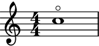
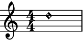
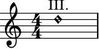

HarmonicNote¶
- class auxjad.HarmonicNote(*arguments, multiplier: Optional[Union[abjad.duration.Duration, Tuple[int, int]]] = None, tag: Optional[abjad.tag.Tag] = None, style: str = "#'harmonic", markup: Optional[str] = None, centre_markup: bool = True, direction: Union[str, abjad.enums.VerticalAlignment] = 'up')[source]¶
Creates a note with tweaked note head for harmonics. This is a child class of
abjad.Note.- Basic usage:
Usage is similar to
abjad.Note:>>> harm = auxjad.HarmonicNote(r"c''4") >>> harm.style "#'harmonic" >>> abjad.show(harm)
And similarly to
abjad.Note, pitch and duration can be input in many different ways:>>> harm1 = auxjad.HarmonicNote(r"c''4") >>> harm2 = auxjad.HarmonicNote(r"c''", 1 / 4) >>> harm3 = auxjad.HarmonicNote(12, 0.25) >>> harm4 = auxjad.HarmonicNote(12, abjad.Duration(1, 4)) >>> staff = abjad.Staff([harm1, harm2, harm3, harm4]) >>> abjad.show(staff)
style:When instantiating this class, use the keyword argument
styleto set a different type of note head, such as"#'harmonic-mixed":>>> harm = auxjad.HarmonicNote(r"c''4", ... style="#'harmonic-mixed", ... ) >>> harm.style "#'harmonic-mixed" >>> abjad.show(harm)
multiplier:Similarly to
abjad.Note, this class can take multipliers:>>> harm = auxjad.HarmonicNote(r"c''4", ... multiplier=(2, 3), ... ) >>> harm.multiplier abjad.Multiplier(2, 3) >>> abjad.show(harm)
- Properties:
All properties of
abjad.Noteare also available to be read. This class also includes a new property namedstyle:>>> harm = auxjad.HarmonicNote(r"c''4") >>> harm.written_pitch "c''" >>> harm.written_duration 1/4 >>> harm.style "#'harmonic"
All these properties can be set to different values after initialisation:
>>> harm.written_pitch = 18 >>> harm.written_duration = abjad.Duration(1, 8) >>> harm.style = "#'harmonic-mixed" >>> harm.written_pitch "fs''" >>> harm.written_duration 1/8 >>> harm.style "#'harmonic-mixed"
- Setting
styleto'flageolet': To create a harmonic note with a regular note head and with a flageolet circle above it, use the style
'flageolet':>>> harm = auxjad.HarmonicNote(r"c''1", ... style='flageolet', ... ) >>> harm.style 'flageolet' >>> abjad.show(harm)
markup:To add a markup expression to the harmonic note, use the
markupoptional keyword argument, which takes strings. By default, the markup position is above the harmonic note, but this can be overridden using the keyworddirection, which can take strings as well asabjad.Upandabjad.Down:>>> harm1 = auxjad.HarmonicNote(r"d''1") >>> harm2 = auxjad.HarmonicNote(r"d''1", ... markup='III.', ... ) >>> harm3 = auxjad.HarmonicNote(r"d''1", ... markup='III.', ... direction=abjad.Down) >>> staff = abjad.Staff([harm1, harm2, harm3]) >>> abjad.show(staff)
Setting
markuptoNonewill remove the markup from the note.>>> harm = auxjad.HarmonicNote(r"d''1", ... markup='III.', ... ) >>> harm.markup = None >>> abjad.show(harm)
centre_markup:When a markup expression is added to the harmonic note by using the
markupoptional keyword argument, it will be automatically centred above the note (as the main purpose of this markup is to show string numbers). To disable this behaviour, setcentre_markuptoFalse. Compare:>>> harm1 = auxjad.HarmonicNote(r"d''1", ... markup='III.', ... ) >>> abjad.show(harm1)
>>> harm2 = auxjad.HarmonicNote(r"d''1", ... markup='III.', ... centre_markup=False, ... ) >>> abjad.show(harm2)
Error
If another markup is attached to the harmonic note, trying to set the
markuptoNonewill raise anException:>>> harm = auxjad.HarmonicNote(r"d''1") >>> abjad.attach(abjad.Markup('test'), harm) >>> harm.markup = 'III.' >>> harm.markup = None Exception: multiple indicators attached to client.
Methods
__init__(*arguments[, multiplier, tag, style])Initialises self.
__repr__()Gets interpreter representation.
from_pitch_and_duration(pitch, duration)Makes note from
pitchandduration.Attributes
Tweaks the markup of the harmonic note head to be centred or not as LilyPond doesn’t centralises markups above note heads by default.
The direction of the harmonic note head.
The markup of the harmonic note head.
Gets multiplier.
Gets and sets note-head.
The style of the harmonic note head.
Gets component tag.
Gets and sets written duration.
Gets and sets written pitch.
- __init__(*arguments, multiplier: Optional[Union[abjad.duration.Duration, Tuple[int, int]]] = None, tag: Optional[abjad.tag.Tag] = None, style: str = "#'harmonic", markup: Optional[str] = None, centre_markup: bool = True, direction: Union[str, abjad.enums.VerticalAlignment] = 'up') → None[source]¶
Initialises self.
- property centre_markup: bool¶
Tweaks the markup of the harmonic note head to be centred or not as LilyPond doesn’t centralises markups above note heads by default.
- property direction: Union[str, abjad.enums.VerticalAlignment]¶
The direction of the harmonic note head.
- static from_pitch_and_duration(pitch, duration)¶
Makes note from
pitchandduration.>>> note = abjad.Note.from_pitch_and_duration('C#5', (3, 16)) >>> abjad.show(note)
- property markup: str¶
The markup of the harmonic note head.
- property multiplier: Optional[Union[abjad.duration.Multiplier, abjad.duration.NonreducedFraction]]¶
Gets multiplier.
- property note_head: Optional[abjad.score.NoteHead]¶
Gets and sets note-head.
>>> note = abjad.Note("cs''8.") >>> note.note_head NoteHead("cs''")
>>> abjad.show(note)
>>> note.note_head = 'D5' >>> note.note_head NoteHead("d''")
>>> abjad.show(note)
- property style: str¶
The style of the harmonic note head.
- property tag: Optional[abjad.tag.Tag]¶
Gets component tag.
- property written_duration: abjad.duration.Duration¶
Gets and sets written duration.
>>> note = abjad.Note("cs''8.") >>> note.written_duration Duration(3, 16)
>>> abjad.show(note)
>>> note.written_duration = (1, 16) >>> note.written_duration Duration(1, 16)
>>> abjad.show(note)
- property written_pitch: Optional[abjad.pitch.pitches.NamedPitch]¶
Gets and sets written pitch.
>>> note = abjad.Note("cs''8.") >>> note.written_pitch NamedPitch("cs''")
>>> abjad.show(note)
>>> note.written_pitch = 'D5' >>> note.written_pitch NamedPitch("d''")
>>> abjad.show(note)